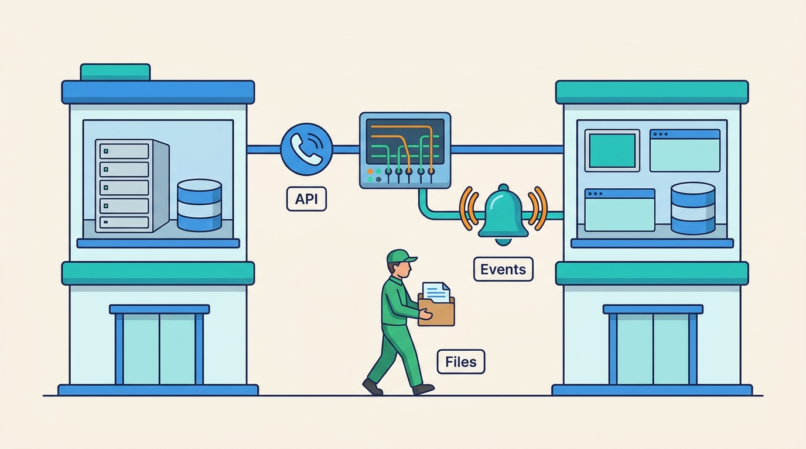

Part VI — INTEGRATION: Making Separate Systems Behave Like One
APIs, Events, Files and Middleware: How Commerce Systems Talk
AI-assisted: researched and written with Claude Code, images generated with the Gemini API. How this works

Part VI — INTEGRATION: Making Separate Systems Behave Like One
AI-assisted: researched and written with Claude Code, images generated with the Gemini API. How this works
